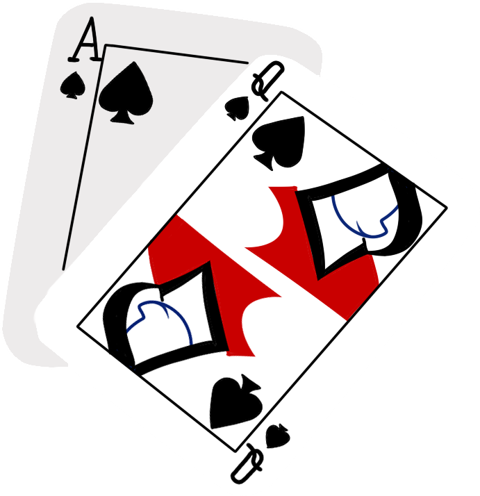

Welcome to Phoenix BlackJack
Rules and Game Play Guide
- Upon entering the game, you will be prompted to enter your name. Type in the name you wish to use and hit Enter
- Next, you will be asked how much money you would like to add to your bank. Enter an amount and hit Enter
- Once you have added money to your bank, the game begins and both you and the dealer will be dealt 2 cards
- Each face card (K, Q, J) is worth 10 points
- Each ace (A) can be worth either 1 or 11, depending on the spread that is dealt
- All number cards are worth their face value (2-10)
- The goal of the game is to get a higher hand (Spread) than the dealer without going over 21
- Any spread that equals 21 with the first 2 cards is an automatic win (BlackJack)
- Once the first 2 cards are dealt, if neither you or the dealer have BlackJack, you will be given the option to Hit (receive another card), Stay (keep the spread you have), or Double (double your bet). If you choose to double, you will again be prompted to hit or stay. Type in your choice and press enter
- The dealer will hit each round until they have 17 or higher, at which point they will stay
- If at any point your cards equal more than 21, you will lose (Busted)
- If your spread is 21 or less and is greater than or equal to the hand of the dealer, you win
- Note: If your beginning 2 cards are the same, you will be given the option to Split, which creates a new spread in addition to the original, each containing 1 of the original 2 cards. If you chose to split, you will be prompted to hit or stay on each spread until the round is finished
- If you run out of money in your bank, you will be prompted to either add more money to the bank or quit the game